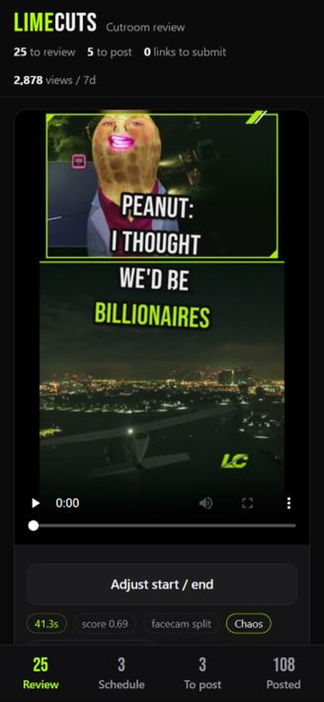

Cutroom
Cutroom is a desktop tool for making short vertical highlight clips from gaming streams. It prepares each clip, shows it in a review page for the creator to approve, and then uploads approved clips to the creator's own YouTube channel as Shorts (through the YouTube Data API) and sends them to the creator's TikTok inbox as drafts. Nothing is uploaded that the creator has not watched and approved.
Cutroom is built and used by the creator behind LimeCuts (@thelimecuts), a gaming highlights channel. It runs on the creator's own Windows PC. It is not a hosted service and has no accounts of its own.
How it works
- Find moments. Cutroom takes long-form footage the creator has permission to clip (streamers who allow clipping, or campaigns that provide the footage) and finds highlight moments from speech, audio and chat activity.
- Prepare clips. It cuts each moment to a vertical 9:16 video with captions and a short title line.
- Human review. Every clip appears in a review page on the creator's PC or phone. The creator watches it and taps Approve or Reject, and can trim it or rewrite its text first. Rejected clips are never uploaded.
- Upload to YouTube. An approved clip is uploaded to the creator's own YouTube channel as a public Short
with the title and description the creator approved (YouTube Data API,
videos.insert). Afterwards Cutroom reads the view counts of those uploads (videos.list) so the creator can see what worked. - Send to TikTok drafts. For TikTok, the creator taps Send to TikTok drafts. Cutroom uploads the video to the creator's own TikTok inbox using TikTok's Content Posting API (upload to inbox). It does not publish anything there.
- The creator posts it. TikTok sends a notification. The creator opens it in the TikTok app, writes or pastes the caption, chooses privacy and other settings, adds any required disclosure, and taps Post.

What Cutroom does with YouTube
- Connects to the creator's own YouTube channel with Google sign-in (OAuth 2.0); the creator approves the
youtube.uploadandyoutube.readonlyscopes on Google's own consent screen. - Uploads approved clips to that channel (
videos.insert), optionally sets their thumbnail (thumbnails.set), and reads the view counts of those uploads (videos.list,channels.listto confirm the connected channel). - Uses YouTube API Services under the YouTube API Services Terms of Service. Nothing it reads about the channel is shared with anyone or kept longer than needed.
It has one user: the creator who runs it. It does not post to other channels, does not like, subscribe or comment, does not add views, and does not read any other user's data.
What Cutroom does with TikTok
- Connects to the creator's own TikTok account with TikTok Login Kit (the creator approves on TikTok's own screen).
- Reads the account's display name and avatar to show which account drafts go to.
- Uploads approved videos to that account's TikTok inbox as drafts (scope
video.upload).
It does not post automatically, does not like, follow or comment, does not add views, and does not read any other user's data.
Contact
Questions about Cutroom: message the LimeCuts channel (the About page lists a contact address).